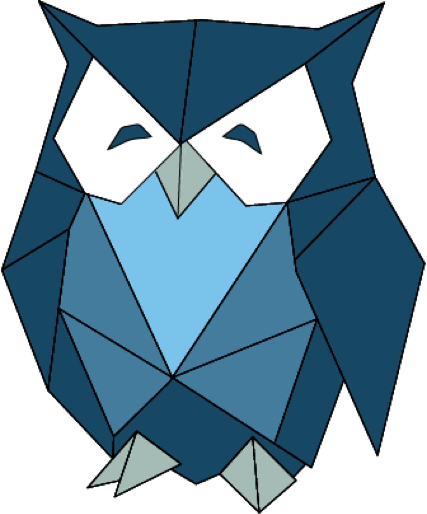

Email inboxes
Contracts, approvals and answers live and die in personal inboxes — invisible to everyone else, gone when someone leaves.
Every day, documents and data pour into your organization — invoices, contracts, forms, emails, scans — and vanish into digital silos: shared drives, inboxes, legacy repositories and line-of-business systems that never talk to each other. Knowledge goes in. Almost nothing comes back out.
The Problem
A black hole doesn't announce itself. It forms quietly, one disconnected system at a time — every place your documents and data land, and then stop moving.
Contracts, approvals and answers live and die in personal inboxes — invisible to everyone else, gone when someone leaves.
Folder mazes full of duplicates and "final_v7" files, where nobody can tell which version is real — or find it again.
Invoices, intake packets and signed forms reduced to static images — the data locked inside them can't be searched, checked or used.
Years of documents stored safely — and sealed off. Retrieval is slow, access is siloed, and the knowledge inside never reaches the work.
Accounting, CRM and operations systems each hold a fragment of the truth — none of them can see the whole picture.
Intake forms and portal submissions get keyed in, filed away, and forgotten — the answers they contain never inform a decision.
The Cost
Nothing is ever deleted. That's the trap. Your business knowledge still exists — it just stops being findable, understandable, and usable.
Nobody can find the current version, the signed copy, or the answer to a simple question — so people ask around, guess, or recreate work that already exists.
Even when something is found, raw documents and data don't explain themselves. Exceptions, trends and discrepancies stay buried in the pile.
Approvals stall, exception queues pile up, and decisions get made without knowledge that already exists somewhere in the building.
The Escape
MaxxLogix® is a documents and data platform. Three capabilities reverse the flow of the black hole — capture what's trapped, connect all of it, and turn it into decisions.
Pulls documents out of the dark. Intelligent document processing reads what arrives — paper, scans, PDFs and email attachments — extracts the data that matters, and delivers it to your line-of-business systems, ready to work with.
One knowledge engine over everything you store. Millions of files are ingested into a single retrieval engine, so the knowledge scattered across your silos becomes searchable — and answerable — in one place.
Turns stored knowledge into decisions. MaxxOwl™ SI reads across your connected documents and data — summarizing, comparing and analyzing — so the meaning buried in your files surfaces where work happens.

Every answer respects the reader's access — the engine only retrieves what that person is allowed to see.
Your knowledge stays yours — strictly separated, never pooled with anyone else's.
Retrieval and actions are traceable, so you can show what was accessed and why.
Guardrails keep intelligence grounded in your governed documents and data.
The Payoff
"The invoice is the document; the outcome is what got done with it."
When documents and data escape the black hole, they stop being storage — and start being finished work.
Imported → read → approved → posted to QuickBooks. The document arrived; the outcome is an invoice your books can trust.
The intake packet is captured, verified and filed — the outcome is a patient ready to be seen, not a stack of forms.
Drafted, redlined, signed and archived — the outcome is an enforceable agreement you can find again in seconds.
How outcomes count: an outcome is a piece of work that reaches a useful business result — counted once, whether the process behind it took two steps or twenty.
Your business already owns the knowledge it needs. MaxxLogix® pulls your documents and data out of the silos — and puts them back to work.
or explore the platform at maxxlogix.com